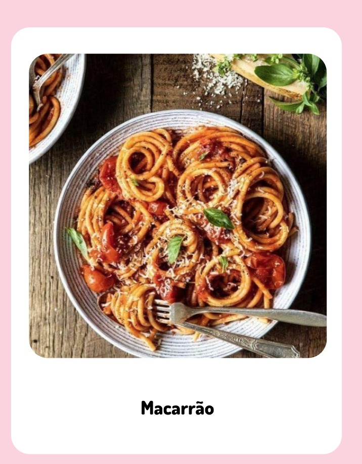

| 
|
|
Ingredientes:
- Meio pacote de macarrão de sua preferência
- 2 litros e meio de água
- Sal a gosto
- 4 colheres de sopa de óleo
- Meia cebola em cubos
- Meia xícara de molho de tomate ou molho de sua preferência
|
|
|
Modo de preparo:
- Em uma panela, coloque aproximadamente 2 litros e meio de água para cozinhar o macarrão e acrescente sal a gosto. Deixe ferver.
- Adicione meio pacote do macarrão de sua preferência e cozinhe até ficar al dente. Escorra e reserve.
- Em seguida, adicione 4 colheres de sopa de óleo e meia cebola em cubos em uma panela. Refogue.
- Acrescente meia xícara do molho de sua preferência e deixe ferver.
- Depois, transfira o macarrão para a panela e misture. Sirva em seguida.
|
|